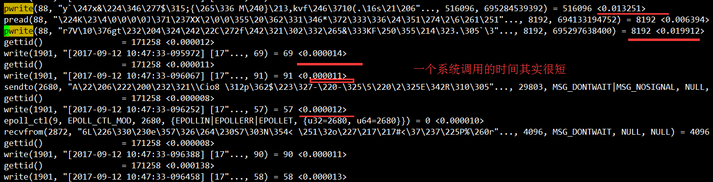
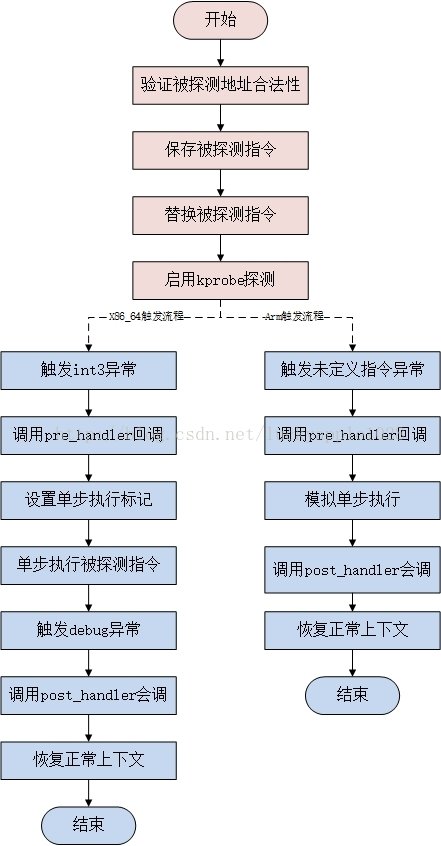
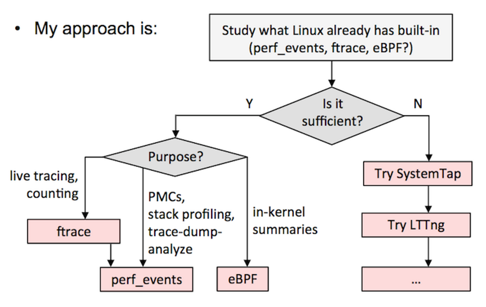

工具命令
dmesg
输出系统日志
vmstat
vmstat [sample_interval] [sample_nums]命令：展现给定时间间隔的服务器的状态值,包括服务器的CPU使用率，内存使用，虚拟内存交换情况,IO读写情况。
输出一些系统核心指标
$ vmstat 1
procs -----------memory------------ ---swap-- -----io---- -system-- ------cpu-----
r b swpd free buff cache si so bi bo in cs us sy id wa st
0 0 0 74551216 648880 11258740 0 0 0 1 1 0 0 0 99 0 0
- r：等待在CPU资源的进程数；
- si，so：交换区写入和读取的数量。如果这个数据不为0，说明系统已经在使用交换区（swap），机器物理内存已经不足；
- cs（context switch）一列则代表了上下文切换的次数，in（interrupt）每秒中断数，包括时钟中断；
- us, sy, id, wa, st：代表CPU时间的消耗，分别表示用户时间（user）、系统（内核）时间（sys）、空闲时间（idle）、IO等待时间（wait）和被偷走的时间（stolen，一般被其他虚拟机消耗）；
sysstat工具包
pidstat
pidstat是sysstat工具的一个命令，用于监控全部或指定进程的cpu、内存、线程、设备IO等系统资源的占用情况。
pidstat [ 选项 ] [ <时间间隔> ] [ <次数> ]
- -u：默认的参数，显示各个进程的cpu使用统计
- -r：显示各个进程的内存使用统计
- -d：显示各个进程的IO使用情况
- -p：指定进程号
- -w：显示每个进程的上下文切换情况
- -t：显示选择任务的线程的统计信息外的额外信息
iostat
查看机器磁盘IO情况
$ iostat -xz 1
Linux 3.10.0-862.el7.x86_64 (work02) 06/20/2022 _x86_64_ (40 CPU)
avg-cpu: %user %nice %system %iowait %steal %idle
0.23 0.00 0.36 0.01 0.00 99.40
Device: rrqm/s wrqm/s r/s w/s rkB/s wkB/s avgrq-sz avgqu-sz await r_await w_await svctm %util
sdc 0.00 0.23 0.19 0.38 2.10 4.12 21.67 0.01 12.81 1.63 18.33 7.11 0.41
sda 0.00 0.07 0.03 1.32 0.68 42.99 64.74 0.01 11.06 0.36 11.30 0.13 0.02
sdb 0.00 0.00 0.00 0.00 0.00 0.00 33.28 0.00 0.23 0.23 0.00 0.18 0.00
sdd 0.00 0.00 0.00 0.00 0.00 0.00 33.47 0.00 1.76 1.76 0.00 1.32 0.00
dm-0 0.00 0.00 0.03 1.39 0.67 42.99 61.42 0.02 10.75 0.36 10.97 0.12 0.02
dm-1 0.00 0.00 0.00 0.00 0.00 0.00 47.65 0.00 0.74 0.74 0.00 0.49 0.00
dm-2 0.00 0.00 0.00 0.00 0.00 0.00 48.19 0.00 0.09 0.09 0.00 0.07 0.00
- r/s, w/s, rkB/s, wkB/s：分别表示每秒读写次数和每秒读写数据量（千字节）。读写量过大，可能会引起性能问题。
- avgqu-sz：向设备发出的请求平均数量。如果这个数值大于1，可能是硬件设备已经饱和（部分前端硬件设备支持并行写入）。
- %util：设备利用率。这个数值表示设备的繁忙程度，经验值是如果超过60，可能会影响IO性能（可以参照IO操作平均等待时间）。如果到达100%，说明硬件设备已经饱和。
sar
可以查看CPU，内存，网络，网口，磁盘，SWAP等。
网口
查看网络设备的吞吐率。在排查性能问题时，可以通过网络设备的吞吐量，判断网络设备是否已经饱和。
- rxpck/s 每秒钟接受的数据包
- txpck/s 每秒钟发送的数据库
- rxKB/S 每秒钟接受的数据包大小，单位为KB
- txKB/S 每秒钟发送的数据包大小，单位为KB
- rxcmp/s 每秒钟接受的压缩数据包
- txcmp/s 每秒钟发送的压缩包
- rxmcst/s 每秒钟接收的多播数据包
$ sar -n DEV 1
Linux 3.10.0-862.el7.x86_64 (work02) 06/20/2022 _x86_64_ (40 CPU)
05:00:39 PM IFACE rxpck/s txpck/s rxkB/s txkB/s rxcmp/s txcmp/s rxmcst/s
05:00:40 PM lo 10.00 10.00 0.79 0.79 0.00 0.00 0.00
05:00:40 PM em2 0.00 0.00 0.00 0.00 0.00 0.00 0.00
05:00:40 PM em4 0.00 0.00 0.00 0.00 0.00 0.00 0.00
05:00:40 PM em3 27.00 26.00 3.05 4.03 0.00 0.00 2.00
05:00:40 PM em1 0.00 0.00 0.00 0.00 0.00 0.00 0.00
TCP网络
判断性能问题是否由于建立了过多的连接，进一步可以判断是主动发起的连接，还是被动接受的连接。TCP重传可能是因为网络环境恶劣，或者服务器压力过大导致丢包。
查看TCP连接状态，其中包括：
- active/s：每秒本地发起的TCP连接数，既通过connect调用创建的TCP连接；
- passive/s：每秒远程发起的TCP连接数，即通过accept调用创建的TCP连接；
- retrans/s：每秒TCP重传数量；
$ sar -n TCP,ETCP 1
Linux 3.13.0-49-generic (titanclusters-xxxxx) 07/14/2015 _x86_64_ (32 CPU)
12:17:19 AM active/s passive/s iseg/s oseg/s
12:17:20 AM 1.00 0.00 10233.00 18846.00
12:17:19 AM atmptf/s estres/s retrans/s isegerr/s orsts/s
12:17:20 AM 0.00 0.00 0.00 0.00 0.00
12:17:20 AM active/s passive/s iseg/s oseg/s
12:17:21 AM 1.00 0.00 8359.00 6039.00
12:17:20 AM atmptf/s estres/s retrans/s isegerr/s orsts/s
12:17:21 AM 0.00 0.00 0.00 0.00 0.00
pstack
查看进程下所有线程的堆栈信息

可以查看的信息：
- 线程号，LWP号；
- 堆栈（栈深度、内存地址、函数名、库名）
通过pstack获取第N号线程的调用栈
# 获取第N号线程内容
file=$1
lwp=$2
echo "$file - $lwp"
found=0
while read line
do
if [[ $found -eq 1 && $line =~ "(LWP " ]]
then
exit 0
fi
if [[ $line =~ "LWP $lwp" ]]
then
found=1
fi
if [[ $found -eq 1 ]]
then
echo $line
fi
done < $file
strace
示例：进程中的171264线程进行系统调用跟踪， 将输出的信息保存在output.txt中
strace -o output.txt -T -tt -e trace=all -p 171264

示例：假设频繁的read/write，对应fd为1901，查看/proc/$pid/fd/1901，如果是个socket连接，
dr-x------ 2 root root 0 3月 8 16:07 ./
dr-xr-xr-x 8 root root 0 3月 8 16:07 ../
lrwx------ 1 root root 64 3月 8 16:08 0 -> /dev/pts/1
lrwx------ 1 root root 64 3月 8 16:08 1 -> /dev/pts/1
lrwx------ 1 root root 64 3月 8 16:09 10 -> socket:[21190]
lrwx------ 1 root root 64 3月 8 16:07 2 -> /dev/pts/1
lrwx------ 1 root root 64 3月 8 16:08 3 -> /tmp/ZCUDY7QsPB (deleted)
lrwx------ 1 root root 64 3月 8 16:08 4 -> /tmp/sess_0fpvhvcpftcme834e1l4beo2i6
lrwx------ 1 root root 64 3月 8 16:08 5 -> socket:[20625]
lrwx------ 1 root root 64 3月 8 16:08 6 -> anon_inode:[eventpoll]
lrwx------ 1 root root 64 3月 8 16:08 7 -> socket:[20626]
lrwx------ 1 root root 64 3月 8 16:08 8 -> socket:[20627]
lrwx------ 1 root root 64 3月 8 16:09 1901 -> socket:[21189]
在/proc/net/tcp目录下面保存了所有TCP链接的状态信息，通过grep查找。
$ grep '21189' /proc/net/tcp
9: 8064A8C0:0929 0164A8C0:F4B5 01 00000000:00000000 02:00097B3E 00000000 0 0 21189 2 ffff88001a505b00 24 4 28 10 -1
链接的IP、PORT链接四元组【8064A8C0:0929 0164A8C0:F4B5】这个地方是用十六进制保存的，换算成十进制方式【192.168.100.128:2345 192.168.100.1:62645】，可以对应查看端口号服务是什么，判断卡顿点。
kprobe
内核提供了一组方法，使用这组方法可以在内核任意一个方法上加一个钩子，每当内核执行到钩子的时候，就可以执行用户自定义的代码。
参考：
原理
现在要在do_fork上加一个钩子，首先根据名称获取该方法在内核中的代码地址，类似于cat /proc/kallsyms | grep do_fork返回的地址 ffffffff81084950处的代码，并将其改成一个软中断。当程序执行到这条指令到时候，就会陷入中断处理程序，中断处理程序执行用户指定代码，实现hook。
目前kprobes技术已经支持多种架构，包括i386、x86_64、ppc64、ia64、sparc64、arm、ppc和mips（有些架构实现可能并不完全，具体可参考内核的Documentation/kprobes.txt）。

配置查看
查看是否开启kprobe
$ cat /boot/config-3.10.0-* | grep KPROBES
CONFIG_KPROBES=y
CONFIG_KPROBES_ON_FTRACE=y
CONFIG_HAVE_KPROBES=y
CONFIG_HAVE_KPROBES_ON_FTRACE=y
使用
//kprobe_example.c
#include<linux/init.h>
#include<linux/module.h>
#include<linux/kernel.h>
#include <linux/kprobes.h>
//统计do_fork()总共执行了几次
static int total_count = 0;
//前置方法，这里可以拿到方法入参和栈，每次执行do_fork() total_count++
static int handler_pre(struct kprobe *p, struct pt_regs *regs)
{
total_count++;
//printk 打印的日志 可以通过dmesg 命令查看
printk(KERN_INFO "累计调用do_fork[%d]次\n",total_count);
return 0;
}
//后置方法，这里可以拿到方法返回值
static void handler_post(struct kprobe *p, struct pt_regs *regs,
unsigned long flags)
{
}
//方法执行失败的回调函数
static int handler_fault(struct kprobe *p, struct pt_regs *regs, int trapnr)
{
printk(KERN_INFO "fault_handler: p->addr = 0x%p, trap #%dn",p->addr, trapnr);
return 0;
}
//通过kprobe这个数据结构，定义要hook的内核方法名称
static struct kprobe kp = {
.symbol_name = "do_fork",
};
//通过register_kprobe 方法更改内核对应方法的指令
static int kprobe_init(void){
int ret;
kp.pre_handler = handler_pre;
kp.post_handler = handler_post;
kp.fault_handler = handler_fault;
ret = register_kprobe(&kp);
if (ret < 0) {
printk(KERN_INFO "register_kprobe failed, returned %d\n", ret);
return ret;
}
printk(KERN_INFO "Planted kprobe at %p\n", kp.addr);
return 0;
}
//通过unregister_kprobe卸载hook
static void kprobe_exit(void){
unregister_kprobe(&kp);
printk(KERN_INFO "kprobe at %p unregistered\n", kp.addr);
}
//构造内核模块
module_init(kprobe_init);
module_exit(kprobe_exit);
MODULE_LICENSE("GPL");
编写makefile
// Makefile
obj-m +=kprobe_example.o
CURRENT_PATH:=$(shell pwd)
LINUX_KERNEL_PATH:=/lib/modules/$(shell uname -r)/build
all:
make -C $(LINUX_KERNEL_PATH) M=$(CURRENT_PATH) modules
clean:
make -C $(LINUX_KERNEL_PATH) M=$(CURRENT_PATH) clean
执行sudo insmod kprobe_example.ko装载内核模块,然后使用dmesg查看内核日志
eBPF
参考：
kprobe的每次调试装载卸载太过繁琐，如果可以装载一个通用的模块，每次调试通过配置这个模块来实现不同的功能，调试就更方便了。于是就引出了第二个关键词eBPF。
eBPF 源于早年间的成型于 BSD 之上的传统技术 BPF（Berkeley Packet Filter）。
BPF 的两大核心功能：
- 过滤Filter：根据外界输入的规则过滤报文；
- 复制Copy：将符合条件的报文由内核空间复制到用户空间；
eBPF是一项革命性的技术，可以在Linux内核中运行沙盒程序，而无需更改内核源代码或加载内核模块。
对于云原生领域，Cilium 已经使用eBPF 实现了无kube-proxy的容器网络。利用eBPF解决iptables带来的性能问题。
BCC
BPF Compiler Collection (BCC)，基于eBPF.
动态追踪
参考：
Mac OS X / Unix : DTrace；Linux : SystemTap, perf

Perf
基本原理是：每隔一个固定时间，就是CPU上产生一个中断，看当前是哪个进程、哪个函数，然后给对应的进程和函数加一个统计值。
-a：表示对所有CPU采样--call-graph dward：表示分析调用栈的关系-p：表示分析指定的进程
System Tap
一个简单的探针和脚本，调用内核系统调用 sys_sync 时触发
global count=0
probe kernel.function("sys_sync") {
count++
printf( "sys_sync called %d times, currently by pid %d\n", count, pid );
}
火焰图（FlameGraph）
https://github.com/brendangregg/FlameGraph
Linux perf_events has a variety of capabilities, including CPU sampling. Using it to sample all CPUs and generate a flame graph:
# git clone https://github.com/brendangregg/FlameGraph # or download it from github
# cd FlameGraph
# perf record -F 99 -a -g -- sleep 60
# perf script | ./stackcollapse-perf.pl > out.perf-folded
# ./flamegraph.pl out.perf-folded > perf-kernel.svg
两种情况下，无法画出火焰图，需要修正系统行为。
（1）调用栈不完整
当调用栈过深时，某些系统只返回前面的一部分（比如前10层）。
（2）函数名缺失
有些函数没有名字，编译器只用内存地址来表示（比如匿名函数）。